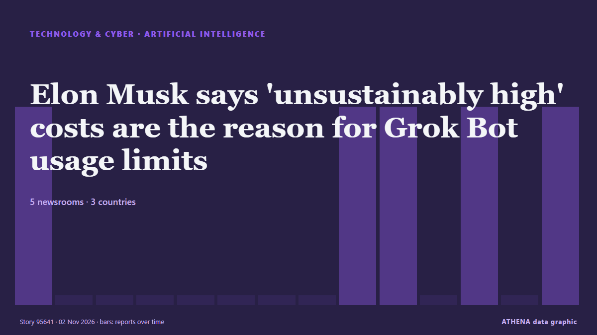

Τεχνητή νοημοσύνη
ΧορηγούμενοΠαρουσιάζεται από  Cybernetics and Artificial Intelligence Lab Welcome to the Cybernetics and Artificial Intelligence Laboratory, established at the Department of Business Administration of the National and Kapodistrian University of Athens. The lab is headed by Professor Dimitrios Thomakos. The lab aims to do research that can be published in top venues. Our research uses tools and methods of Artificial Intelligence, and lies in the following areas: - Forecasting - Decision making - Cyber security - Finance We are always looking forward to collaborating with exceptional students!
Cybernetics and Artificial Intelligence Lab Welcome to the Cybernetics and Artificial Intelligence Laboratory, established at the Department of Business Administration of the National and Kapodistrian University of Athens. The lab is headed by Professor Dimitrios Thomakos. The lab aims to do research that can be published in top venues. Our research uses tools and methods of Artificial Intelligence, and lies in the following areas: - Forecasting - Decision making - Cyber security - Finance We are always looking forward to collaborating with exceptional students!
| 21 Οκτ | 0 |
|---|---|
| 22 Οκτ | 0 |
| 23 Οκτ | 0 |
| 24 Οκτ | 0 |
| 25 Οκτ | 0 |
| 26 Οκτ | 0 |
| 27 Οκτ | 0 |
| 28 Οκτ | 0 |
| 29 Οκτ | 1 |
| 30 Οκτ | 3 |
| 31 Οκτ | 2 |
| 1 Νοε | 4 |
| 2 Νοε | 10 |
| 3 Νοε | 4 |
Οι τίτλοι των ειδήσεων παρουσιάζονται στα αγγλικά, όπως δημοσιεύτηκαν.

Elon Musk says 'unsustainably high' costs are the reason for Grok Bot usage limits
The SpaceX CEO said the cost of serving the AI agent was "unsustainably high relative to revenue," after some users complained about usage limits. από Business Insider
Google's use of press by AI chatbot may infringe copyright rules, EU court adviser says
Google's Gemini AI may violate copyright rules when it uses publishers' content to generate answers, an EU court adviser said, while distinguishing that use from AI training. από The Jerusalem Post
Anthropic Reports $17 Billion Quarterly Revenue Ahead of IPO
Anthropic’s revenue reached $17 billion for the three months ended Sept. από PYMNTS
AI models mostly smarter than top scientists, OpenAI's Altman says
CEO says AI models capable of performing white-collar work but people must 'remain in control of the future' από Express Tribune
Merz says next German president 'must be a woman' — report
German President Frank-Walter Steinmeier's second term is due to end in March next year. από DW English
(LEAD) Lee orders review for establishment of cybersecurity task force
SEOUL, Nov. 3 (Yonhap) -- President Lee Jae Myung on Tuesday instructed official... από Yonhap (English)
Oracle taps investors for US$20bil to finance AI expansion
NEW YORK: Oracle plans to raise US$20 billion through bond and share sales, regulatory filings showed on Monday, as the software giant taps investors to fund its costly AI and cloud infrastructure… από New Straits Times
Cardi B Tells Students to Pass Exams Without Using AI: ‘Don’t Ask ChatGPT for the Answer’
Cardi had a message for the students who attended Johns Hopkins University’s Hoptoberfest over the weekend. από Billboard
HSBC to open Hong Kong AI Institute following Singapore launch
The AI unit will work with Hong Kong University of Science and Technology as its anchor academic partner, although the bank's CEO Georges Elhedery did not disclose headcount details. από CNA (Channel NewsAsia)
Samsung execs meet Open AI's Sam Altman to discuss AI transformation
SEOUL, Oct. 31 (Yonhap) -- Top executives from key Samsung affiliates met with O... από Yonhap (English)
Nvidia weighs credit support for Nscale as data center, IPO face pressure
Nvidia is reportedly evaluating billions of dollars in credit support for UK neocloud provider Nscale to help cover power and construction costs for a data center in West Virginia. από DigiTimes Asia
Sam Altman meets with Samsung, SK as memory crunch deepens
OpenAI CEO Sam Altman met with executives from Samsung Group and SK Group during a brief visit to South Korea on October 31, as tightening memory supplies and growing commitments to major AI… από DigiTimes Asia
Malicious Claude Code extension on Cursor planted SSH backdoors
A malicious version of Anthropic's Claude Code VS Code extension was distributed through Cursor's extension marketplace for approximately 11 hours on October 29, exposing up to 5,000 developers to… από BleepingComputer
(LEAD) Lee vows bold investment in AI, future growth engines to boost growth potential
SEOUL, Nov. 2 (Yonhap) -- President Lee Jae Myung on Monday pledged bold investm... από Yonhap (English)
Asia shares bend under AI stress; Apple earnings loom
SYDNEY: Asian share markets slipped on Monday as worries about the sustainability of the artificial intelligence (AI) investment boom loomed over the tech sector, while the high price of oil limited… από New Straits Times
OpenAI Cuts Funding Target by $10 Billion as Investor Jitters Shake AI Markets
OpenAI has cut the target for its current funding round from $30 billion to $20 billion amid investor concerns about the artificial intelligence market, The Financial Times reported Friday (Oct. από PYMNTS
‘Air-con nation’ Singapore eyes alternatives to cool down
Some buildings in the city-state are exploring active chilled beams and radiant cooling to replace compressor units that release hot air into the environment. από Free Malaysia Today
Alibaba partners with Apple to integrate Qwen AI model into Apple Intelligence for Chinese market
Feature to launch with official iOS 27.3 release in December. από Anadolu Agency (English)